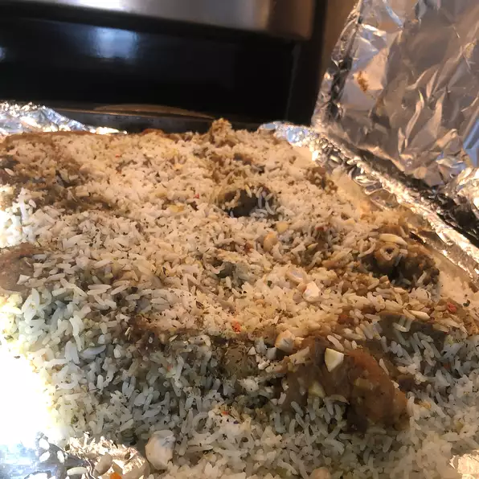

Home
Biryani

Description
Cook:
1 hr 55 mins
Additional:
9 hrs
Total:
11 hrs 10 mins
Prep:
15 mins
Servings:
12
Yield:
12 servings
Ingredients
- 1½ pounds goat meat
- 1¼ cups plain Greek yogurt, stirred
- 6 pitted prunes, or more to taste
- 3½ tablespoons diced fresh ginger
- 1¼ tablespoons garlic paste
Steps
- Step 1
Mix goat meat, yogurt, prunes, ginger, garlic paste, 1 1/2
teaspoons salt, cumin, black pepper, turmeric, red chile pepper,
cinnamon, and cloves together in a bowl. Cover bowl with plastic
wrap and marinate in the refrigerator, 8 to 14 hours.
Step 2
Rinse the rice under lukewarm water 2 times. Place rice in a pot
and cover with enough cold water to reach 1 1/4 to 1 1/2 inches
above rice; soak for 1 hour.
- Step 3
Melt unsalted butter in a large skillet over low heat; cook and
stir onions until translucent and golden, about 10 minutes. Add
tomatoes; cook and stir until oil separates and rises to the surface,
5 to 10 minutes.
- Step 3
Melt unsalted butter in a large skillet over low heat; cook
and stir onions until translucent and golden, about 10 minutes.
Add tomatoes; cook and stir until oil separates and rises to the
surface, 5 to 10 minutes.